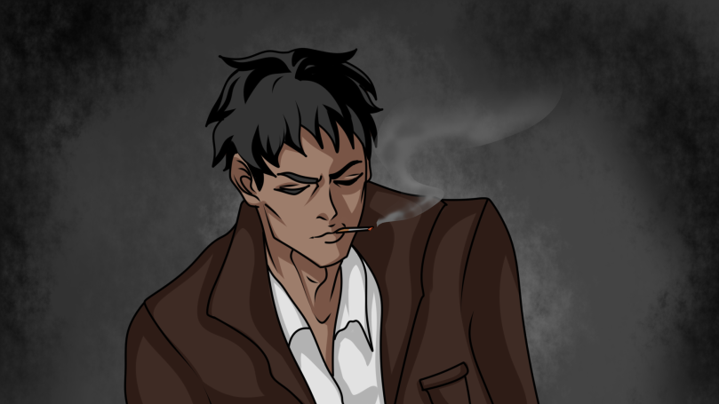
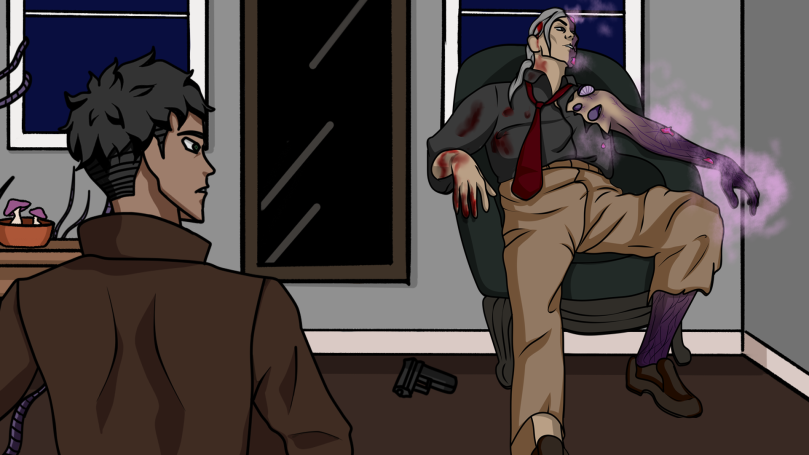

Case: Burnside
Case: Burnside is a Point and Click Game with a lot of puzzles.
Burnside finds himself in a dilema of life. A new case appears, trapped and close to death, the same dilema comes back for him to make a final choice.
I created the storyline and characters for this game. Despite the challenge that the game only included gameplay for 5 minutes, it's a worthy story to explore.
 Script Example: Burnside’s Monologue IntroAnother day in this city. You would think that case after case, the world could be better. But it all ends the same. The Wingman’s case… It still haunts me… no matter what I do I can’t bring Gomez back. But I still haven’t lost hope… And now more than ever this city needs me.